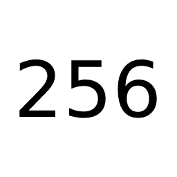

Select name: FOOOOOOOO BARRRRRRR
Select icon (Change white -> alt icons to verify the 10% diff): white_icons red_icons alt_icons
Select theme color (verify non-security sensitive update): lightgreen lightsalmon gold lightskyblue white black